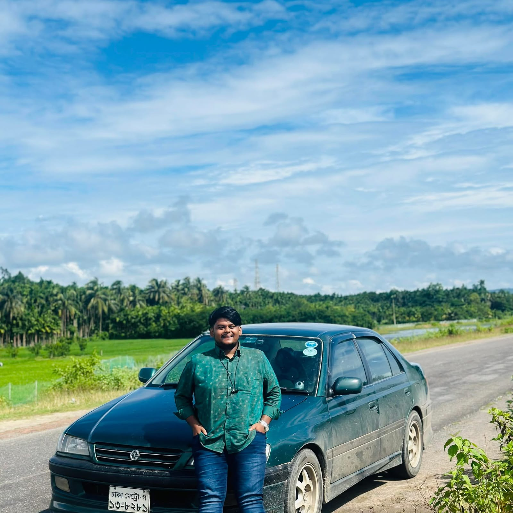
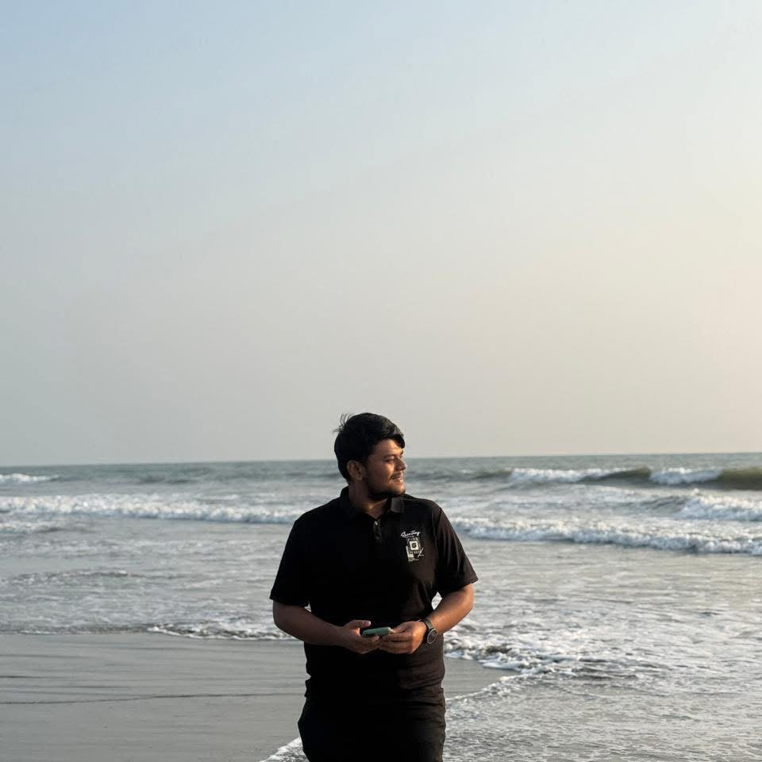
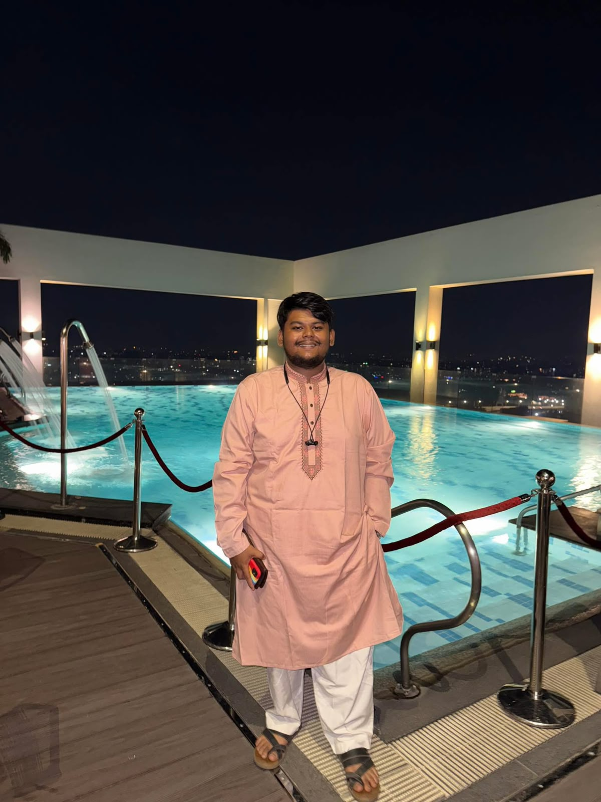

01
TRAVEL
On The Road
A moment from my journey exploring Bangladesh by road.
MOBILITY · TRAVEL · EXPERIENCE
Exploring roads, vehicles, places and opportunities through business, movement and real-world experience.
BEYOND JOURNALISM
My interests extend beyond journalism into entrepreneurship, mobility and travel. I believe that being on the road creates opportunities to discover people, places, ideas and experiences that cannot always be found behind a desk.
Alongside my professional career, I am involved in the used vehicle market and have developed a strong personal connection with cars, motorcycles and long-distance travel.

ENTREPRENEURSHIP
Amie's Mart is my used car and motorcycle buying and selling business. I am involved directly in sourcing vehicles, evaluating their condition, coordinating repairs and maintenance, and preparing them for resale.
My approach is based on practical experience, communication, negotiation and understanding what makes a vehicle valuable and reliable for its next owner.
Visit Amie's Mart ↗THE ROAD IS PART OF MY STORY
Around 60 districts. Countless roads. Endless experiences.
TRAVEL & DISCOVERY
I love travelling and exploring new places. I have personally travelled to around 60 districts of Bangladesh by riding motorcycles and driving cars myself.
Every journey gives me a different perspective — new people, new roads, different cultures, unexpected stories and experiences that stay with me long after the journey ends.
For me, travel is not simply about reaching a destination. It is about experiencing the journey itself.
FROM THE ROAD

TRAVEL
A moment from my journey exploring Bangladesh by road.

JOURNEY
Discovering new places and experiences through long-distance journeys.

EXPERIENCE
The journey itself becomes part of the story.

EXPLORATION
Every road brings a different view, a different story and a different lesson.

MOBILITY
Cars, motorcycles and open roads have become an important part of my journey.

TRAVEL
A collection of moments captured while exploring different parts of Bangladesh.
WHAT MOBILITY HAS TAUGHT ME
Buying and selling vehicles has strengthened my communication and negotiation skills.
Vehicle evaluation, repairs and travel constantly require practical decision-making.
Travelling across different districts has taught me to adapt to unfamiliar situations.
Business, driving and long journeys require careful planning and responsibility.
MY APPROACH
Move with purpose. Explore with curiosity. Build with responsibility.
LET'S CONNECT
Let's connect and explore opportunities together.
Contact Me →